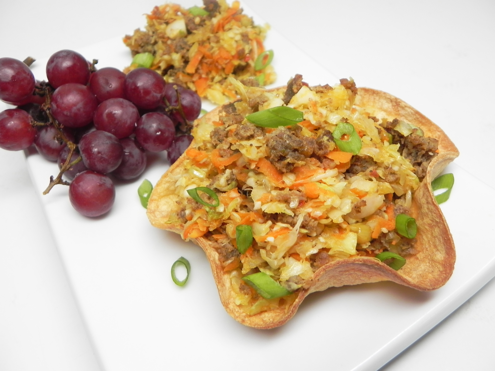

Sausage Egg Roll Recipe

Description
Egg roll ingredients without the fried egg roll part.
Ingredients
- 1 pound ground pork sausage
- 6 cups coleslaw mix
- 2 carrots, peeled and grated
- ¼ cup chopped green onions
- 4 cloves garlic, minced
- 1 tablespoon low-sodium soy sauce
- 1 tablespoon sesame oil
- 2 tablespoons shelled sunflower seeds (Optional)
- 1 tablespoon grated ginger root
Steps
-
Heat a large skillet over medium-high heat. Cook and stir pork sausage
in the hot skillet until browned and crumbly, 5 to 7 minutes.
-
Add coleslaw mix, carrots, green onions, garlic, soy sauce, and sesame
oil.
- Cook and stir until tender, 7 to 10 minutes
- Add ginger and sunflower seeds
- stir to combine.